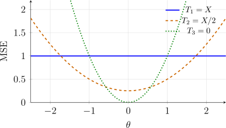

1.2 Unbiasedness and Mean Square Error
Two questions we ask of an estimator are:
- 1.
- Is it centred on the right value, or is it consistently too large or too small?
- 2.
- How far from the true value is it likely to be?
The first leads to unbiasedness, the second to the mean square error. Both are expectations, so we first fix notation. We write \(E_\theta \) for an expectation computed under the parameter value \(\theta \): \[E_\theta \left [h(X)\right ] = \begin {cases} \int h(x)\, f_\theta (x)\, dx & \text {if } X \text { is continuous},\\[1ex] \sum _x h(x)\, f_\theta (x) & \text {if } X \text { is discrete}, \end {cases}\] provided \(E_\theta |h(X)| < \infty \). When this fails the expectation does not exist, and an estimator without a mean cannot be unbiased.
Example 1.2.1. Let \(X\) have the Cauchy distribution with p.d.f. \(f(x) = \frac {1}{\pi (1 + x^2)}\), \(-\infty < x < \infty \). Show that \(E(X)\) does not exist.
Solution. By symmetry, \[E|X| = \frac {2}{\pi }\int ^{\infty }_{0} \frac {x}{1 + x^2}\, dx = \lim _{m\to \infty } \frac {1}{\pi }\ln \left (1 + m^2\right ) = \infty .\] Since \(E|X|\) is infinite, \(E(X)\) is not defined. (The symmetric integral \(\int _{-m}^m \frac {x}{\pi (1+x^2)}\,dx = 0\) for every \(m\), but that is not the definition of an expectation: the positive and negative parts are each infinite.)
Example 1.2.2. Let \(X\) have p.d.f. \(f_\theta (x) = \frac {\theta }{x^{\theta + 1}}\), \(x\ge 1\), \(\theta >0\). For which \(\theta \) do \(E_\theta (X)\) and \(\var _\theta (X)\) exist? Find them.
Solution. For \(\theta \ne 1\), \[E_\theta (X) = \int _1^\infty x\,\frac {\theta }{x^{\theta + 1}}\, dx = \int _1^\infty \theta \, x^{-\theta }\, dx = \left [\frac {\theta }{1 - \theta }\, x^{1 - \theta }\right ]_1^\infty .\] The term \(x^{1-\theta }\) tends to \(0\) as \(x\to \infty \) only if \(\theta >1\); for \(\theta \le 1\) the integral diverges. So \(E_\theta (X) = \frac {\theta }{\theta - 1}\) for \(\theta >1\). In the same way \[E_\theta (X^2) = \int _1^\infty \theta \, x^{1 - \theta }\, dx = \frac {\theta }{\theta - 2}, \qquad \theta >2 ,\] and for \(\theta >2\) \[\var _\theta (X) = \frac {\theta }{\theta - 2} - \frac {\theta ^2}{(\theta - 1)^2} = \frac {\theta (\theta - 1)^2 - \theta ^2(\theta - 2)}{(\theta - 1)^2(\theta - 2)} = \frac {\theta }{(\theta - 1)^2(\theta - 2)} .\] For \(1<\theta \le 2\) the mean exists but the variance is infinite.
Problem 1.2.1. If \(X\thicksim \) GAM\((\alpha \, , \, \beta )\), show that \[E_{\theta }\left (X^p\right ) = \frac {\beta ^p\, \Gamma \left (\alpha + p\right )}{\Gamma (\alpha )}\] For what values of \(p\) does this expectation exist?
Show solution
Solution. The GAM\((\alpha ,\beta )\) density is \[f(x) = \frac {x^{\alpha -1}e^{-x/\beta }}{\beta ^{\alpha }\Gamma (\alpha )},\qquad x>0 .\] Hence \[E\left (X^{p}\right ) = \frac {1}{\beta ^{\alpha }\Gamma (\alpha )}\int _0^{\infty } x^{\alpha +p-1}e^{-x/\beta }\,dx .\] The integral is the normalising constant of a GAM\((\alpha +p,\beta )\) density, so it equals \(\beta ^{\alpha +p}\,\Gamma (\alpha +p)\) whenever \(\alpha +p>0\), and \[E\left (X^{p}\right ) = \frac {\beta ^{\alpha +p}\Gamma (\alpha +p)}{\beta ^{\alpha }\Gamma (\alpha )} = \frac {\beta ^{p}\,\Gamma (\alpha +p)}{\Gamma (\alpha )} .\]
When it exists
The integral converges at the origin only if \(\alpha +p>0\), so the expectation exists precisely for \(p>-\alpha \). Positive moments always exist; negative moments exist only down to \(-\alpha \), which is why \(E(1/X)\) requires \(\alpha >1\) and \(E(1/X^{2})\) requires \(\alpha >2\). Convergence at infinity is never in doubt — the exponential dominates any power.
Problem 1.2.2. Let \(\, m(t) = E\left (e^{tx}\right )\,\) be the moment generating function of a continued random variable \(X\). The function \(m(-t)\) is often called the Laplace Transform of the probability function \(X\). Show that \[E\left (X^{-p}\right ) = \frac {1}{\Gamma (p)}\, \int _0^{\infty }\, m(-t)\, t^{p - 1}\, dt\]
Show solution
Solution. Assume \(X>0\) with probability one and \(p>0\). The key is the integral representation of a negative power: substituting \(u=tx\) in \[\int _0^{\infty } e^{-tx}\,t^{p-1}\,dt = \frac {1}{x^{p}}\int _0^{\infty }e^{-u}u^{p-1}\,du = \frac {\Gamma (p)}{x^{p}}, \qquad x>0 .\] Now start from the right-hand side of the claim and use \(m(-t)=E\left (e^{-tX}\right )\): \[\frac {1}{\Gamma (p)}\int _0^{\infty } m(-t)\,t^{p-1}\,dt = \frac {1}{\Gamma (p)}\int _0^{\infty } E\left (e^{-tX}\right ) t^{p-1}\,dt = \frac {1}{\Gamma (p)}\, E\left [\int _0^{\infty } e^{-tX}t^{p-1}\,dt\right ],\] the exchange of expectation and integral being justified by Tonelli’s theorem, since the integrand is non-negative throughout. By the displayed identity the inner integral is \(\Gamma (p)/X^{p}\), so the whole expression is \[\frac {1}{\Gamma (p)}\,E\left [\frac {\Gamma (p)}{X^{p}}\right ] = E\left (X^{-p}\right ).\]
Note. The result converts a negative moment, which is usually awkward, into an integral of the moment generating function, which is often known in closed form. The requirement \(X>0\) is essential: without it \(X^{-p}\) need not be defined, and \(m(-t)\) need not be finite for all \(t>0\).
Problem 1.2.3. Let \(X_1\, , \, X_2\, ,\, \cdots \, X_n\,\) be a random sample from the POI\((\theta )\) distribution. Find \[E_{\theta }\left (X^{(k)}\right ) = E_{\theta }\left [X(X-1)(X-2)\cdots (X-k+1)\right ]\] the \(k^{\text {th}}\) factorial moment of \(X\), and thus find an unbiased estimator of \(\theta ^k\,\, , \,\ k = 1\,, \, 2\, \, \cdots \)
Show solution
Solution.
The factorial moment
For \(X\sim \) POI\((\theta )\) the terms with \(x<k\) vanish, because the product \(x(x-1)\cdots (x-k+1)\) contains a zero factor. For \(x\geq k\), \[\frac {x(x-1)\cdots (x-k+1)}{x!} = \frac {1}{(x-k)!},\] so \[E_{\theta }\left (X^{(k)}\right ) = \sum _{x=k}^{\infty } \frac {e^{-\theta }\theta ^{x}}{(x-k)!} = \theta ^{k}\sum _{y=0}^{\infty }\frac {e^{-\theta }\theta ^{y}}{y!} = \theta ^{k},\] substituting \(y=x-k\) and recognising the Poisson probabilities, which sum to one.
An unbiased estimator
The calculation already gives one: \(X_1^{(k)}\) is unbiased for \(\theta ^{k}\). It uses a single observation, so it is a poor estimator, and the sufficient statistic \(T=\sum _{i=1}^{n}X_i\) does better. Since \(T\sim \) POI\((n\theta )\), the same identity applied to \(T\) gives \(E_{\theta }\left (T^{(k)}\right ) = (n\theta )^{k}\), so \[\widehat {\theta ^{k}} = \frac {T^{(k)}}{n^{k}} = \frac {T(T-1)\cdots (T-k+1)}{n^{k}}\] is unbiased for \(\theta ^{k}\). As \(T\) is complete and sufficient, this is the UMVUE by the theorem of the previous section.
For \(k=1\) it reduces to \(\overline {X}\), as it should. For \(k=2\) it is \(T(T-1)/n^{2}\), which is not \(\overline {X}^{2}\) — a reminder that an unbiased estimator of \(\theta \) does not give an unbiased estimator of \(\theta ^{2}\) by squaring.
1.2.1 Unbiased Estimators
Definition 1.2.3. A statistic \(T(X)\) is an unbiased estimator of \(\tau (\theta )\) if \(E_\theta \left [T(X)\right ] = \tau (\theta )\) for all \(\theta \in \Omega \). The bias of \(T\) is \(\bias _\theta (T) = E_\theta (T) - \tau (\theta )\).
The requirement is for all \(\theta \): an estimator that happens to be centred correctly at one parameter value but not at others is biased.
Example 1.2.4. Let \(X_i\sim \text {POI}(i\theta )\), \(i = 1, 2, \dots , n\), independently. Are \[T_1 = \frac {1}{n}\sum _{i = 1}^{n}\frac {X_i}{i}\qquad \text {and}\qquad T_2 = \frac {2}{n(n+1)}\sum ^n_{i=1}X_i\] unbiased estimators of \(\theta \)?
Solution. Since \(E(X_i) = i\theta \), \[E(T_1) = \frac {1}{n}\sum _{i = 1}^n\frac {i\theta }{i} = \theta ,\qquad E(T_2) = \frac {2}{n(n+1)}\sum _{i = 1}^n i\theta = \frac {2\theta }{n(n+1)}\cdot \frac {n(n+1)}{2} = \theta .\] Both are unbiased. Example 1.2.9 shows they are not equally good.
Unbiasedness is not preserved by nonlinear transformations: if \(T\) is unbiased for \(\theta \), then \(T^2\) is in general not unbiased for \(\theta ^2\), since \(E(T^2) = \var (T) + \theta ^2\).
Example 1.2.5. Let \(X_1, \dots , X_n\) be uncorrelated with \(E(X_i) = \mu \) and \(\var (X_i) = \sigma ^2\).
- (i)
- Show that \(T = \frac {1}{n}\sum (X_i - \mu )^2\) is unbiased for \(\sigma ^2\) when \(\mu \) is known.
- (ii)
- Show that \(S^2 = \frac {1}{n - 1}\sum (X_i - \bar X)^2\) is unbiased for \(\sigma ^2\) when \(\mu \) is unknown.
- (iii)
- If the \(X_i\) are a random sample from \(N(\mu , \sigma ^2)\), show that \(S\) is not unbiased for \(\sigma \), and find a multiple of \(S\) that is.
Solution.
- (i)
- \(E(T) = \frac {1}{n}\sum E(X_i - \mu )^2 = \frac {1}{n}\cdot n\sigma ^2 = \sigma ^2\).
- (ii)
- Write \(X_i - \bar X = (X_i - \mu ) - (\bar X - \mu )\). Since \(\sum (X_i - \mu ) = n(\bar X - \mu )\), \[\sum (X_i - \bar X)^2 = \sum (X_i - \mu )^2 - n(\bar X - \mu )^2 .\] The \(X_i\) are uncorrelated, so \(E(\bar X - \mu )^2 = \var (\bar X) = \frac {\sigma ^2}{n}\), and \[E\left [\sum (X_i - \bar X)^2\right ] = n\sigma ^2 - n\cdot \frac {\sigma ^2}{n} = (n - 1)\sigma ^2 .\] Dividing by \(n - 1\) gives \(E(S^2) = \sigma ^2\).
- (iii)
- For a normal sample, \(W = \frac {(n - 1)S^2}{\sigma ^2}\sim \chi ^2(n - 1) = \text {GAM}\left (\frac {n - 1}{2}, 2\right )\). By problem 1.2.1 with \(p = \frac 12\), \[E\left (W^{1/2}\right ) = \frac {2^{1/2}\,\Gamma \left (\frac {n}{2}\right )}{\Gamma \left (\frac {n - 1}{2}\right )}, \qquad \text {so}\qquad E(S) = \frac {\sigma }{\sqrt {n - 1}}\,E\left (W^{1/2}\right ) = \sigma \sqrt {\frac {2}{n - 1}}\,\frac {\Gamma \left (\frac {n}{2}\right )}{\Gamma \left (\frac {n - 1}{2}\right )} .\] This is not \(\sigma \) (for \(n = 2\) it is \(\sigma \sqrt {2/\pi }\approx 0.80\,\sigma \)), so \(S\) is biased. The estimator \[T = \sqrt {\frac {n - 1}{2}}\,\frac {\Gamma \left (\frac {n - 1}{2}\right )}{\Gamma \left (\frac {n}{2}\right )}\, S\] is unbiased for \(\sigma \).
Example 1.2.6. Let \(X\sim \text {BIN}(n, \theta )\).
- (i)
- Find an unbiased estimator \(T(X)\) of \(\theta \).
- (ii)
- Is \(\frac {1}{T(X)}\) an unbiased estimator of \(\frac {1}{\theta }\)?
Solution.
- (i)
- \(T = \frac {X}{n}\), since \(E(T) = \frac {n\theta }{n} = \theta \).
- (ii)
- \(\frac 1T = \frac nX\) is infinite when \(X = 0\), which has probability \((1 - \theta )^n>0\). So \(E\left (\frac nX\right )\) is infinite and \(\frac 1T\) is not unbiased for \(\frac 1\theta \). In fact no statistic is: any \(U(X)\) has \(E_\theta (U) = \sum _{x=0}^n U(x)\binom nx\theta ^x(1-\theta )^{n-x}\), a polynomial in \(\theta \) of degree at most \(n\), and \(\frac 1\theta \) is not a polynomial.
1.2.2 Mean square error
Unbiasedness alone does not make an estimator good. Figure 1.1 shows the distributions of two estimators of \(\theta \): \(T_1\) is unbiased but widely spread, while \(T_2\) is slightly biased but concentrated. Which is better depends on how we measure the distance between an estimator and the truth.
A loss function \(L(\theta , T)\) measures the cost of estimating \(\theta \) by \(T\). Its average over the distribution of the data is the risk \[R(\theta , T) = E_\theta \left [L(\theta , T(X))\right ] ,\] and a good estimator has small risk. The two standard choices are
- squared error loss \(L(\theta , T) = (T - \theta )^2\), whose risk is the mean square error \[\MSE _\theta (T) = E_\theta \left [(T(X) - \theta )^2\right ] ;\]
- absolute error loss \(L(\theta , T) = |T - \theta |\), whose risk is the mean absolute error \(E_\theta |T(X) - \theta |\).
The mean square error is the one used almost always, because it splits into variance and bias.
Problem 1.2.4. Show that \(\,\, \MSE _{\theta } (T) = \var _{\theta }(T) + \left (\bias _{\theta }(T)\right )^2\,\) where \(\bias _{\theta }(T) = E_{\theta }\left (T(X) - \theta \right )\).
Show solution
Solution. Write \(\mu _T = E_{\theta }\left (T\right )\) and add and subtract it inside the square: \begin {align*} \MSE _{\theta }(T) &= E_{\theta }\left [\left (T-\theta \right )^{2}\right ] = E_{\theta }\left [\left \{\left (T-\mu _T\right ) + \left (\mu _T-\theta \right )\right \}^{2}\right ]\\ &= E_{\theta }\left [\left (T-\mu _T\right )^{2}\right ] + 2\left (\mu _T-\theta \right )E_{\theta }\left [T-\mu _T\right ] + \left (\mu _T-\theta \right )^{2}. \end {align*}
The middle term vanishes because \(E_{\theta }\left [T-\mu _T\right ]=0\), and \(\mu _T-\theta \) is a constant that may be taken outside the expectation. The first term is \(\var _{\theta }(T)\) and the last is \(\left [\bias _{\theta }(T)\right ]^{2}\), giving \[\MSE _{\theta }(T) = \var _{\theta }(T) + \left [\bias _{\theta }(T)\right ]^{2}.\]
Note. The decomposition is the reason unbiasedness is a convenience rather than a virtue. Setting the bias to zero removes one term, but nothing guarantees the sum is smallest there — and the next two problems produce estimators that are biased and beat the unbiased ones outright.
Example 1.2.7. Let \(X_1, \dots , X_n\) be a random sample from \(\text {UNIF}(0, \theta )\). Compare the mean square errors of \[T_1 = 2\bar X,\qquad T_2 = X_{(n)},\qquad T_3 = (n + 1)X_{(1)} .\]
Solution. We use \(\MSE (T) = \var (T) + \left [\bias (T)\right ]^2\) (problem 1.2.4). For one observation \(E(X) = \frac \theta 2\), \(\var (X) = \frac {\theta ^2}{12}\) and \(F(x) = \frac x\theta \) on \((0, \theta )\).
\(T_1 = 2\bar X\)
\(E(T_1) = 2\cdot \frac \theta 2 = \theta \), so \(T_1\) is unbiased and \[\MSE (T_1) = \var (2\bar X) = \frac {4}{n}\cdot \frac {\theta ^2}{12} = \frac {\theta ^2}{3n} .\]
\(T_2 = X_{(n)}\)
\(Y = X_{(n)}\) has distribution function \(P(Y\le y) = \left [F(y)\right ]^n = \left (\frac y\theta \right )^n\), so \[f_Y(y) = \frac {n y^{n-1}}{\theta ^n},\qquad 0<y<\theta .\] Then \(E(Y) = \frac {n\theta }{n + 1}\) and \(E(Y^2) = \frac {n\theta ^2}{n + 2}\), so \[\bias (T_2) = -\frac {\theta }{n + 1},\qquad \var (T_2) = \frac {n\theta ^2}{n + 2} - \frac {n^2\theta ^2}{(n + 1)^2} = \frac {n\theta ^2}{(n + 1)^2(n + 2)},\] and \[\MSE (T_2) = \frac {n\theta ^2}{(n + 1)^2(n + 2)} + \frac {\theta ^2}{(n + 1)^2} = \frac {(2n + 2)\theta ^2}{(n + 1)^2(n + 2)} = \frac {2\theta ^2}{(n + 1)(n + 2)} .\]
\(T_3 = (n + 1)X_{(1)}\)
\(Y = X_{(1)}\) has \(P(Y>y) = \left [1 - F(y)\right ]^n = \left (1 - \frac y\theta \right )^n\), so \[f_Y(y) = \frac n\theta \left (1 - \frac y\theta \right )^{n - 1},\qquad 0<y<\theta .\] With the substitution \(u = \frac y\theta \) the moments are beta integrals: \(E(Y) = \frac {\theta }{n + 1}\) and \(E(Y^2) = \frac {2\theta ^2}{(n + 1)(n + 2)}\). So \(E(T_3) = \theta \), \(T_3\) is unbiased, and \[\MSE (T_3) = (n + 1)^2\var (Y) = (n + 1)^2\left [\frac {2\theta ^2}{(n + 1)(n + 2)} - \frac {\theta ^2}{(n + 1)^2}\right ] = \frac {n\theta ^2}{n + 2} .\]
Comparison
For every \(n\), \[\frac {2\theta ^2}{(n + 1)(n + 2)}\ \le \ \frac {\theta ^2}{3n}\ \le \ \frac {n\theta ^2}{n + 2} .\] The first inequality is \((n - 1)(n - 2)\ge 0\) and the second is \(n + 2\le 3n^2\). All three coincide at \(n = 1\), and \(T_1\) and \(T_2\) tie at \(n = 2\); for \(n\ge 3\) the inequalities are strict. The biased estimator \(X_{(n)}\) is best: its mean square error falls like \(\frac {1}{n^2}\), against \(\frac 1n\) for \(2\bar X\), while \(T_3\) does not improve at all as \(n\) grows. It uses only the smallest observation, which carries little information about the upper end point.
Problem 1.2.5. Let \(\, X_1\, , \, X_2\, , \, \cdots \, , \, X_n\,\) be a random sample from a UNIF\((0\, , \, \theta )\) distribution. Consider the following estimators of \(\theta \): \begin {align*} T & = X_{(1)} + X_{(n)}\\ R & = X_{(n)} - X_{(1)} \end {align*}
which estimator is unbiased? Compare the MSE’s of these estimators.
Show solution
Solution. For a sample from UNIF\((0,\theta )\) the extreme order statistics satisfy \[E\left (X_{(1)}\right ) = \frac {\theta }{n+1},\qquad E\left (X_{(n)}\right ) = \frac {n\theta }{n+1},\] \[\var \left (X_{(1)}\right ) = \var \left (X_{(n)}\right ) = \frac {n\theta ^{2}}{(n+1)^{2}(n+2)}, \qquad \cov \left (X_{(1)},X_{(n)}\right ) = \frac {\theta ^{2}}{(n+1)^{2}(n+2)} .\]
Which is unbiased
\[E(T) = \frac {\theta }{n+1} + \frac {n\theta }{n+1} = \theta ,\qquad E(R) = \frac {n\theta }{n+1} - \frac {\theta }{n+1} = \frac {(n-1)\theta }{n+1}.\] So \(T\) is unbiased and \(R\) is not; \(R\) has bias \(-2\theta /(n+1)\), which is negative because the range of a sample can never reach the full length \(\theta \).
Comparing mean square errors
Adding the variances with the covariance term, \[\var (T) = 2\var \left (X_{(1)}\right ) + 2\cov \left (X_{(1)},X_{(n)}\right ) = \frac {2\theta ^{2}}{(n+1)(n+2)},\] \[\var (R) = 2\var \left (X_{(1)}\right ) - 2\cov \left (X_{(1)},X_{(n)}\right ) = \frac {2(n-1)\theta ^{2}}{(n+1)^{2}(n+2)} .\] Since \(T\) is unbiased, \(\MSE (T) = \var (T)\). For \(R\), adding the squared bias, \[\MSE (R) = \frac {2(n-1)\theta ^{2}}{(n+1)^{2}(n+2)} + \frac {4\theta ^{2}}{(n+1)^{2}} = \frac {6\theta ^{2}}{(n+1)(n+2)} .\] Therefore \[\frac {\MSE (R)}{\MSE (T)} = 3 \qquad \text {for every } n .\] \(T\) beats \(R\) by a factor of three at every sample size. The ratio does not depend on \(n\) or on \(\theta \), so no sample size rescues \(R\).
Problem 1.2.6. Let \(\, X_1\, , \, X_2\, , \, \cdots \, , \, X_n\,\) be a random sample from the \(N(\mu \, , \, \sigma ^2)\) distribution. Consider the following estimators of \(\sigma ^2\): \[T_1= \frac {n - 1}{n}S^2\quad , \quad T_2 = \frac {n - 1}{n + 1}\, S^2\quad \text {where}\quad S^2 = \frac {1}{n - 1}\sum ^n_{i = 1}\left (X_i - \overline {X}\right )^2\] Compare the MSE’s of these estimators by grouping them as a function of \(\sigma ^2\) for \(n = 5\).
Show solution
Solution. Under normality \(W = (n-1)S^{2}/\sigma ^{2} \sim \chi ^{2}_{(n-1)}\), so \(E(W)=n-1\) and \(\var (W)=2(n-1)\). Both estimators have the form \(c\,\sigma ^{2}W\): for \(T_1\), \(c=1/n\); for \(T_2\), \(c=1/(n+1)\). For such an estimator \[\MSE = c^{2}\sigma ^{4}\var (W) + \left [c\,\sigma ^{2}E(W) - \sigma ^{2}\right ]^{2} = \sigma ^{4}\left \{2(n-1)c^{2} + \left [c(n-1)-1\right ]^{2}\right \}.\] Substituting the two values of \(c\), \[\MSE (T_1) = \frac {(2n-1)\,\sigma ^{4}}{n^{2}},\qquad \MSE (T_2) = \frac {2\,\sigma ^{4}}{n+1} .\] For comparison the unbiased \(S^{2}\) itself has \(\MSE (S^{2}) = 2\sigma ^{4}/(n-1)\).
At \(n=5\)
\[\MSE (T_1) = \frac {9}{25}\sigma ^{4} = 0.360\,\sigma ^{4},\qquad \MSE (T_2) = \frac {1}{3}\sigma ^{4} \approx 0.333\,\sigma ^{4},\qquad \MSE (S^{2}) = \frac {1}{2}\sigma ^{4} .\] The ordering is \(\MSE (T_2) < \MSE (T_1) < \MSE (S^{2})\), and it holds for every \(n\), not only \(n=5\).
Remark. Minimising \(2(n-1)c^{2} + \left [c(n-1)-1\right ]^{2}\) over \(c\) gives \(c = 1/(n+1)\) exactly, so \(T_2\) is not merely better than the other two — it is the best estimator of the form \(cS^{2}\) there is. The unbiased choice \(c=1/(n-1)\) is the worst of the three. This is the clearest illustration in the chapter of the point made in the previous problem: insisting on unbiasedness costs accuracy.
Example 1.2.8. Let \(X\sim N(\theta , 1)\). Compare the mean square errors of \(T_1 = X\), \(T_2 = \frac X2\) and \(T_3 = 0\).
Solution. \(T_1\) is unbiased with variance \(1\), so \(\MSE (T_1) = 1\). \(T_2\) has mean \(\frac \theta 2\), bias \(-\frac \theta 2\) and variance \(\frac 14\), so \(\MSE (T_2) = \frac 14 + \frac {\theta ^2}{4} = \frac {1 + \theta ^2}{4}\). \(T_3\) has variance \(0\) and bias \(-\theta \), so \(\MSE (T_3) = \theta ^2\).
The three curves are drawn in figure 1.2. \(T_3\) is best for \(|\theta |<\frac {1}{\sqrt 3}\), \(T_2\) for \(\frac {1}{\sqrt 3}<|\theta |<\sqrt 3\), and \(T_1\) for \(|\theta |>\sqrt 3\). No estimator is best for every \(\theta \); even the absurd estimator \(T_3 = 0\), which ignores the data, wins when \(\theta \) is near \(0\).

Example 1.2.9. Compare the variances of the two unbiased estimators \(T_1\) and \(T_2\) of example 1.2.4.
Solution. Since \(\var (X_i) = i\theta \) and the \(X_i\) are independent, \[\var (T_1) = \frac {1}{n^2}\sum _{i=1}^n\frac {i\theta }{i^2} = \frac {\theta }{n^2}\sum _{i=1}^n\frac 1i, \qquad \var (T_2) = \frac {4}{n^2(n + 1)^2}\sum _{i=1}^n i\theta = \frac {2\theta }{n(n + 1)} .\] For \(n = 10\), \(\sum _{i=1}^{10}\frac 1i = 2.929\), so \(\var (T_1) = 0.0293\,\theta \) and \(\var (T_2) = 0.0182\,\theta \). In general \(\var (T_1)\) falls like \(\frac {\ln n}{n^2}\) and \(\var (T_2)\) like \(\frac {2}{n^2}\), so \(T_2\) is the better estimator for large samples. Example 1.6.12 shows that \(T_2\) is in fact the best unbiased estimator.
Example 1.2.8 shows that we cannot hope for an estimator with the smallest mean square error for every \(\theta \): the constant estimator \(T = \theta _0\) has zero error at \(\theta = \theta _0\), so a uniformly best estimator would need zero error everywhere. To make progress we restrict the class of estimators and look for the best one within it. The most common restriction is to unbiased estimators, for which the mean square error is the variance.
1.2.3 Uniformly Minimum Variance Unbiased Estimation
Definition 1.2.10. An estimator \(T(X)\) is a uniformly minimum variance unbiased estimator (UMVUE) of \(\tau (\theta )\) if
- (i)
- it is unbiased for \(\tau (\theta )\), and
- (ii)
- \(\var _\theta (T)\le \var _\theta (U)\) for every \(\theta \in \Omega \) and every other unbiased estimator \(U\) of \(\tau (\theta )\).
The word uniformly means that one estimator has the smallest variance at every \(\theta \) simultaneously. The rest of this chapter develops the tools (sufficiency, completeness and the exponential family) that let us find UMVUEs, and chapter 2 gives a lower bound for their variance.
Questions on this section
Stuck on something here? Ask below and it stays attached to this topic.